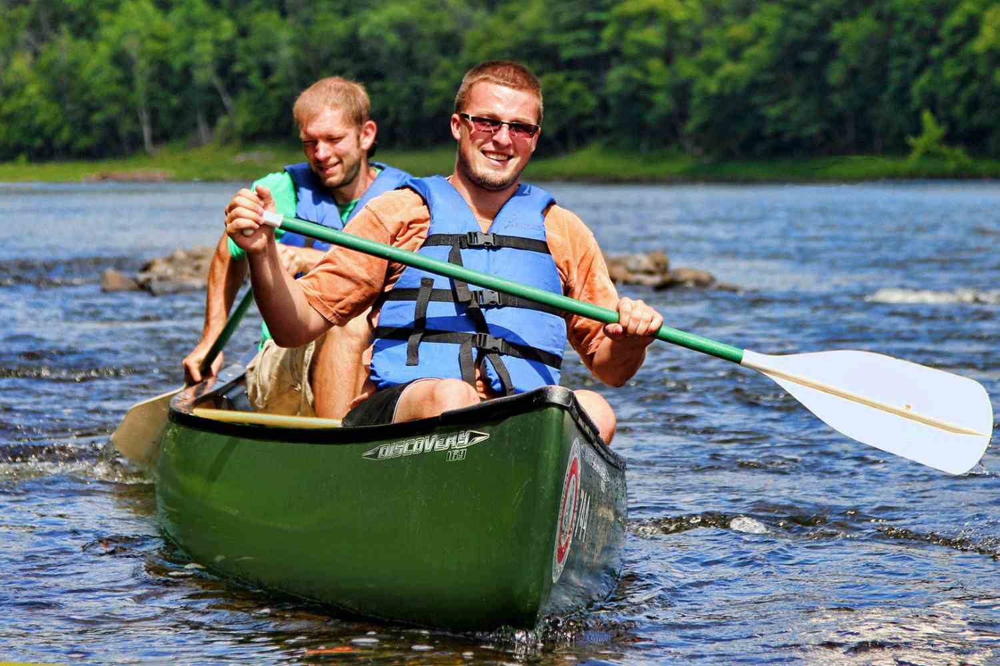

Rafting on certain sections of rivers is considered an extreme sport and can be fatal, while other sections are not so extreme or difficult. Rafting is also a competitive sport practiced around the world which culminates in a world rafting championship event between the participating nations. The International Rafting Federation, often referred to as the IRF, is the worldwide body which oversees all aspects of the sport.